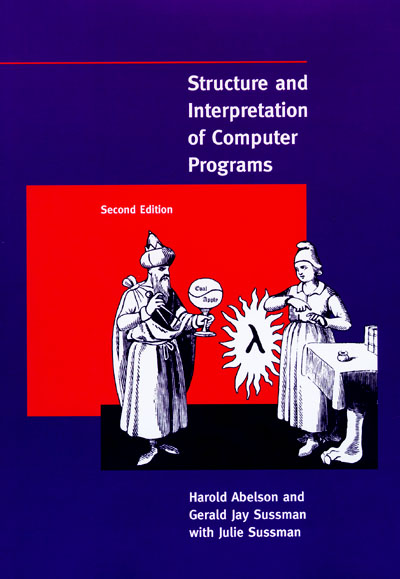

SICP Reading Journey
在大一暑假期間我找了 Structure And Interpretation of Computer Programs 這本在網路上十分有名的 Computer Science 入門書來讀， 這本書是以前麻省理工 EECS 大一同名必修課所用的課本，網路上還找的到開放課程 ( OCW 網址) 。我想說趁這個暑假空閒的時間藉此多初探二三十年前國外的資訊系學的東西有什麼，還有學一些像是functional progamming的概念，以及基本的直譯器、編譯器如何被寫出來。
在閱讀這本書時我照著開放課程中，去安裝了 mit-scheme 這個 Scheme 直譯器，並試著學了一點點的 edwin (scheme 版的 emacs)。希望能跟著這本書
順便學習怎麼寫Scheme，以及試著把一部份裡面的程式轉成 common lisp。
- ...